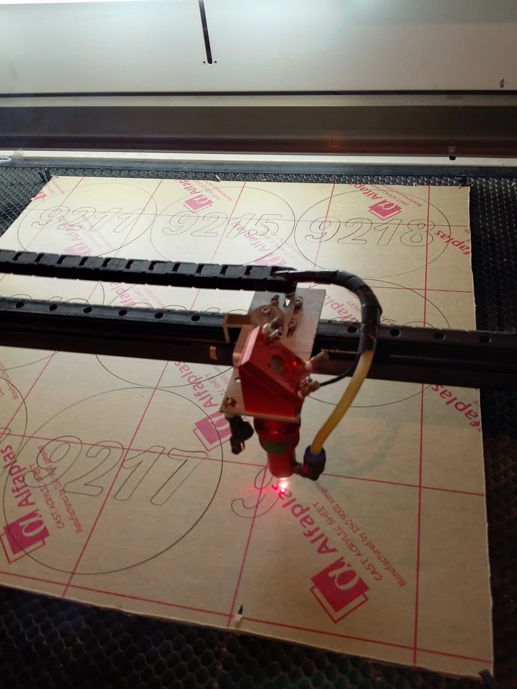
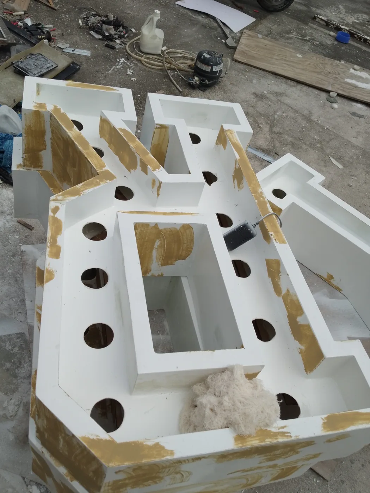
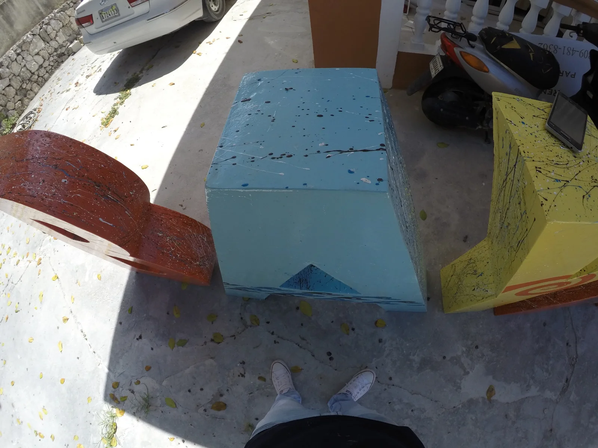

El taller
Diseño, materiales
y fabricación.
Santiago Sosa Studio reúne diseño gráfico y producción de elementos personalizados en Bávaro–Punta Cana.

De la idea al objeto.
Trabajamos en rotulación, señalización, productos en acrílico y soluciones gráficas para empresas y particulares.
El corte y grabado láser CO₂ forma parte de nuestras capacidades de fabricación. Evaluamos cada pieza según su diseño, material y aplicación.
Cómo trabajamos
Cada paso tiene su propósito.
Consulta
Entendemos la pieza, su uso, cantidad y fecha deseada.
Propuesta
Definimos diseño, alcance y presupuesto.
Aprobación
Acordamos los detalles antes de fabricar.
Fabricación
Producimos la solución acordada.
Entrega o instalación
Según lo cotizado. La instalación considera complejidad, ubicación y desplazamiento.
El proceso en detalle
Preparar, lijar y dar color.
Cada acabado lleva trabajo. Estas fotografías muestran piezas en distintas etapas de fabricación.


Empecemos por tu idea
Cuéntanos qué necesitas fabricar.
Una referencia, unas medidas o una idea son un buen comienzo.